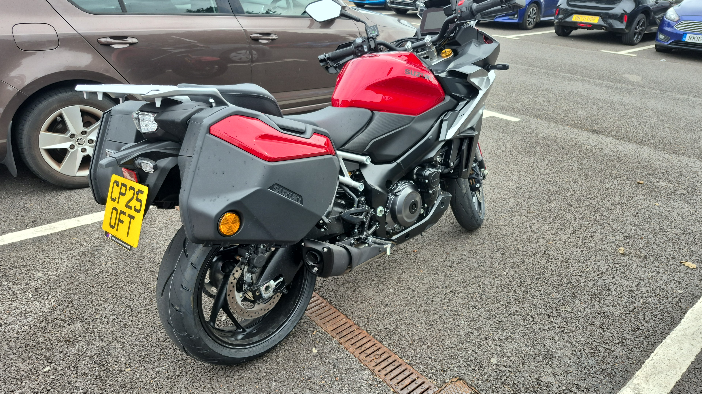
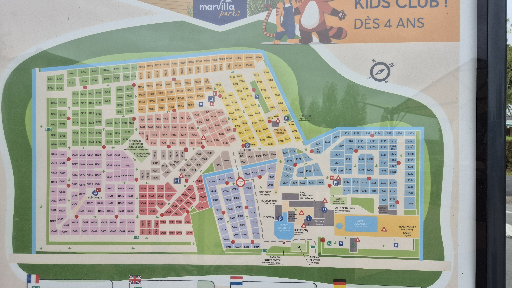
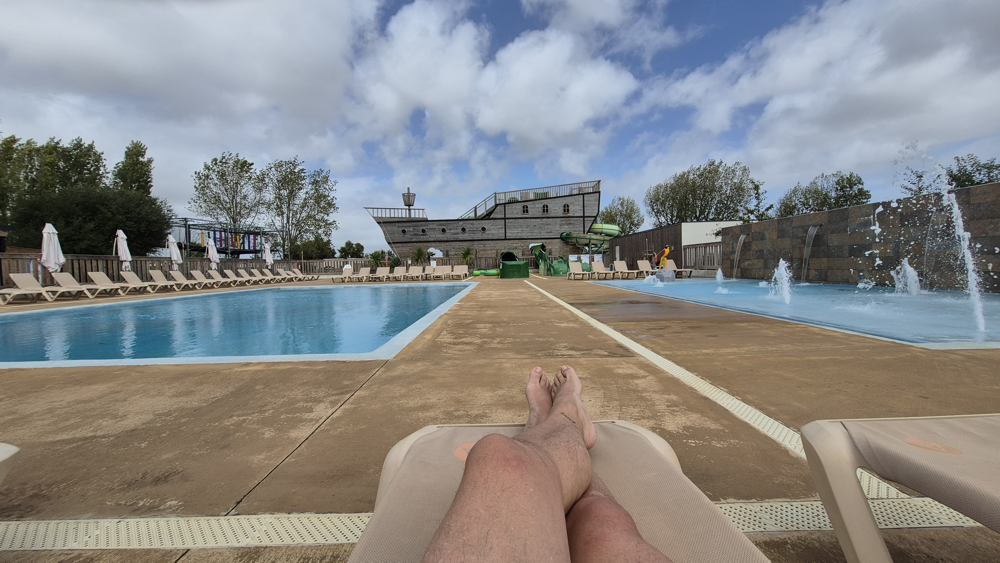
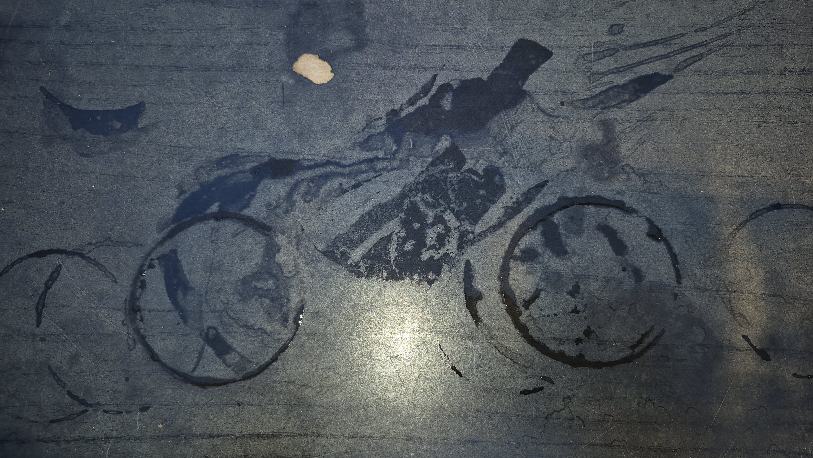
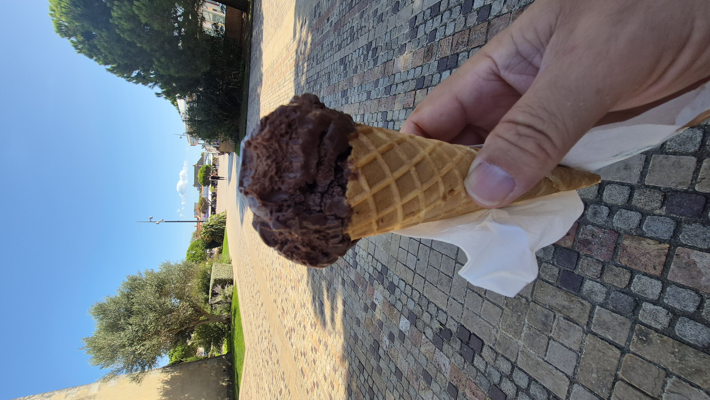
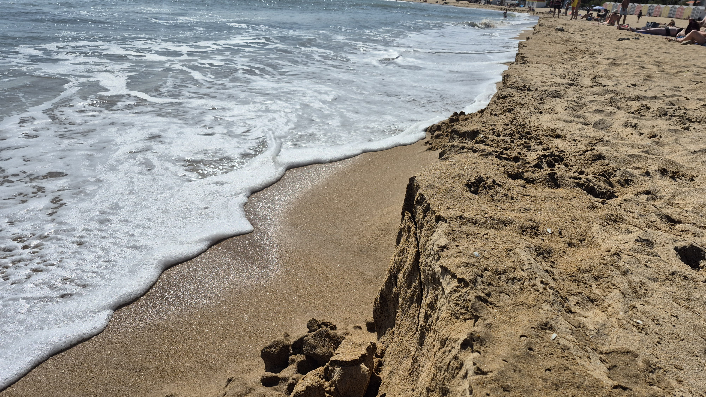

September in the Vendee

Suzuki GSX-S1000GX+
So far I really can't fault this bike. Well apart from the overly close ratio sporty gearbox, but I suspect that says more about my riding style than it does about the bike itself.
I chose the GX after test riding the GSX-S1000GT. The GT is the sportier-looking of the two and physically smaller than quite a few of its rivals. The dealer did have a GX in the showroom, but it had already been sold, so I could sit on it but couldn't take it out for a test ride.
I preferred the GX almost immediately because of the more upright riding position. What I hadn't really considered was the extra seat height. That probably shouldn't have come as a surprise, as the GX is designed as a crossover: not quite a sports tourer, not quite an adventure bike, but somewhere very comfortably in between.
Back to France
Once again I headed off to sunny France, this time for 12 nights in yet another luxury caravan. My destination was Aunis Club Vendée, close to La Tranche-sur-Mer in the Vendée.
As has now become almost routine, I took the overnight ferry from Portsmouth to Ouistreham, arriving in France at around 8am and ready for a leisurely ride south.

I was in no hurry, so I took the back roads and followed the sat-nav while occasionally “correcting” it whenever it tried to steer me away from the pretty little towns and villages and onto the bypasses.
Eventually it kept insisting that I turn left, so in the town of Chemazé I decided to give it the benefit of the doubt. I turned into a very short road which ended after about 25 metres, with a no-entry road ahead leading towards some houses.
I stopped next to the kerb, ready to turn around, and waited for an oncoming car to pass. Somehow the driver managed to miss the front of the bike but clipped my left pannier instead.
That was enough to push the bike over, with me still sitting on it, and onto the pavement. My right foot ended up trapped underneath.
I managed to pull my foot free and a very kind man, who was there with his three children, came over and helped lift the bike back upright and onto its stand.
I suspected I had broken a toe or two. The driver lived nearby, so everyone else walked back to her house while I hobbled. We completed the insurance paperwork there, with the man who had helped me acting as an interpreter.
One cup of tea, a lot of apologies and a fair amount of hobbling later, I was back on the bike and continuing towards the campsite.
Eventually, the campsite

I eventually reached the site and checked in. By then, the pain in my foot was probably around nine out of ten.
I soon discovered that dangling it in the swimming pool helped. French lager also appeared to have some pain-relieving properties, although I accept that the medical evidence for this may be limited.

The following day I umm'd and ahh'd about going to hospital to get it checked out. In the end, not wishing to be a wuss, I went to the local pharmacy in La Tranche-sur-Mer, bought some painkillers and cream, manned up and got on with it.
It did rather spoil the idea of a walking holiday though.
Making the best of it

I still managed to hobble to the bar every evening. That turned out to be slightly disappointing because I was usually the only person there. On a busy night there might have been ten of us.
There was no entertainment on site at all, and towards the end of my stay they started packing things away, including the poolside recliners. That annoyed me a little. I had paid for the facilities just like everyone else and the site wasn't due to close until the following week, so it felt a bit cheeky to start dismantling the place while guests were still there.
The photo above was a complete accident. I wasn't trying to line the glass up with the bike or do some clever trick shot. I was simply enjoying a pint in the sunshine, kept putting the glass down in roughly the same place, and eventually noticed that from where I was sitting it looked rather good.

I visited La Tranche-sur-Mer a couple of times during the holiday and had a wander around the local shops. It is a lovely little town with plenty of bars, takeaways and small shops to explore.
My favourite establishment, naturally, was the one with the best selection of ice cream.
My choice? Chocolate, obviously.

This was a strange sight on the beach. The sand had formed these unusual patterns which, apparently, were caused by an exceptionally high tide. By the next tide they would probably be gone again.
It was one of those little things I probably wouldn't have noticed on a normal holiday, but because I spend so much of my time walking, looking around and wondering why things are the way they are, it became another photograph and another question to investigate later.
Still to come
Despite the damaged foot, there was still plenty more to the holiday.
I spent time walking along the beach whenever my foot allowed it, and during the final week Liam arrived to join me. He had his own caravan, of course. Apparently mine wasn't posh enough for him.
We also visited the aquarium a couple of miles away, which deserves a section of its own once I have gone back through the photos and reminded myself exactly where everything was.
So, as usual, this story is still growing.